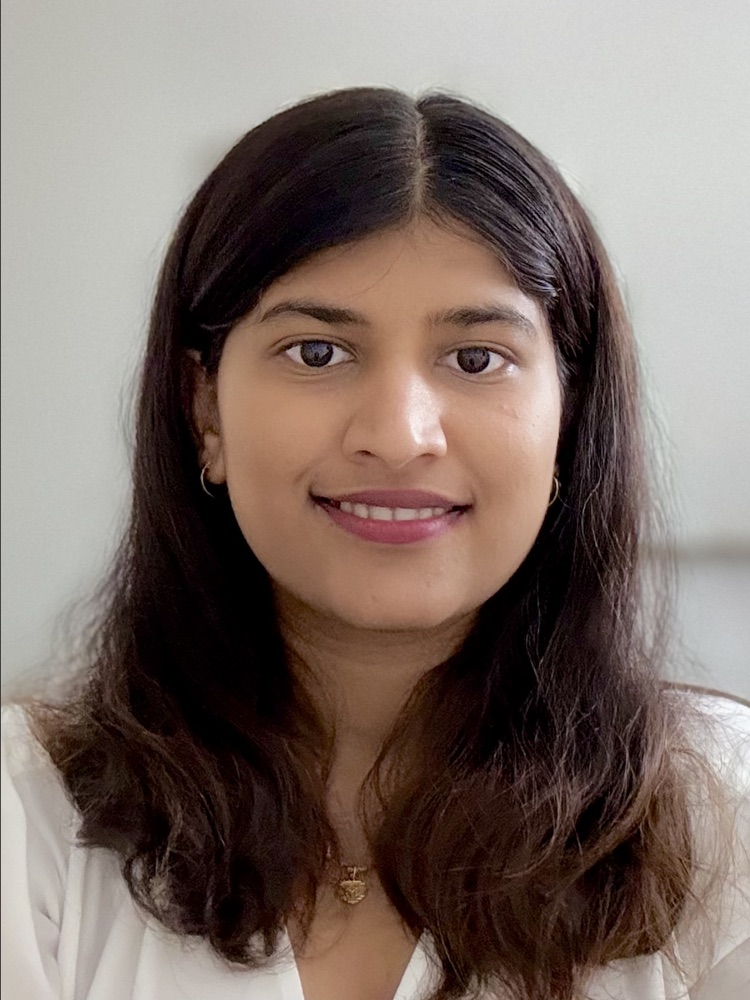

Preethu Nath Manjunath
Applied AI engineer in Seattle. I build knowledge graphs and AI tools, mostly for oil and gas.

Data Squared · Lead Data Scientist · 2024 – now
One graph for an oil and gas company
Operations, maintenance, assets and finance lived in separate systems. I connected them in one knowledge graph.
Try a question:
Simplified example. Tap a node or a question.
- Integration time for a new system: 6 months → 4 weeks
- Invoice review: hours → seconds, about 10× throughput
- Permitting analytics, cost-anomaly detection, edge data centers in the field
Experience
- 2024 – nowLead Data Scientist · Data Squared
Knowledge graphs, document AI and ingestion for oil and gas.Seattle - 2023 – 2024Data Consultant · KOBEYO
Built a job-matching platform: RAG, agents, LoRA fine-tuning. 90%+ sourcing automated.Basalt, CO - 2025Student Intern · Honda 99P Labs
Led a team of five on recall prediction (87% precision) with a GPT-3.5 query layer.Boulder, CO - 2024Graduate Research Assistant · Leeds School of Business, CU Boulder
Fine-tuned GPT-3.5 and Claude for research, +30% accuracy.Boulder, CO - 2024Data Science Intern · CodeModulo Technologies
LLM inference 30% faster; Power BI retail dashboard.Remote - 2022 – 2023Data Scientist Consultant · Deloitte Consulting USI
NLP risk signals from 1,000+ daily news alerts. Spot Award.Bengaluru - 2020 – 2022Data Scientist · Hexaware Technologies
NER in spaCy; XGBoost loan-default model at 93% recall.Chennai
Education
M.S. in Data Science, University of Colorado Boulder
Tools I use
- AI and ML
- LLM applications, RAG and GraphRAG, agents, evaluation, LoRA / PEFT, OpenAI and Claude APIs, Hugging Face, PyTorch, scikit-learn, XGBoost, spaCy
- Graphs and data
- Knowledge graphs, ontology design, Neo4j, Memgraph, PostgreSQL, Snowflake, Supabase
- Cloud
- AWS (Lambda, ECS, SageMaker, Glue, S3, Step Functions), Azure, Docker, FastAPI, Temporal, MQTT, edge and offline AI
- Languages
- Python, SQL, R, Java, C/C++
- Reporting
- Power BI, Tableau
Get in touch
Open to applied AI and solutions-architecture roles.